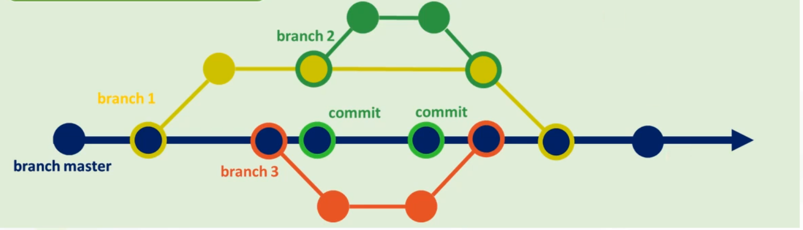

Branch Master ou Main
é o braço principal do seu projeto, o que está sendo utilizado pelos usuários.
Branch Secundária
é o Braço secundário do projeto, onde pode-se fazer alterações, Retirar ou incluir novas funções sem que atinja diretamente o Branch Master

Hospedagem
O GitHub Oferece hospedagem gratuitas de Sites.
Basta Criar uma conta e um repositório Público.